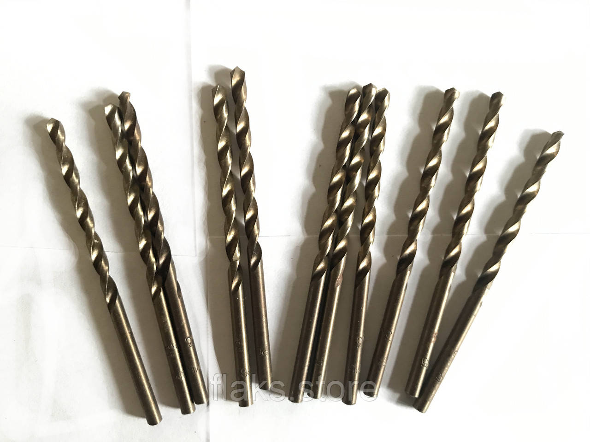

Свердла цх лівіСверла цх левые
Свердло ц/х ф 1.9 А1 HSS Чехія ліве (оригінальна упаковка)Сверло ц/х ф 1.9 А1 HSS Чехия левое (оригинальная упаковка)
ОписОписание
Свердло ц/х ф 1.9 А1 HSS Чехія ліве (оригінальна упаковка) — професійний металорізальний інструмент для свердління отворів у металі. Основні параметри: діаметр Ø 1.9 мм, циліндричний хвостовик та ліве виконання. Виготовлено з матеріалу швидкорізальна сталь HSS, що забезпечує стійкість різальної кромки при обробці сталей та кольорових металів. Виробник: Чехія. Інструмент перевірений і готовий до відвантаження. В наявності 370 шт. на складі у Харкові. Ціна 40 грн без ПДВ. Опт і роздріб, відправлення по всій Україні. Замовлення від 2 000 грн.Сверло ц/х ф 1.9 А1 HSS Чехия левое (оригинальная упаковка) — профессиональный металлорежущий инструмент для сверления отверстий в металле. Основные параметры: диаметр Ø 1.9 мм, цилиндрический хвостовик и левое исполнение. Изготовлен из материала быстрорежущая сталь HSS, что обеспечивает стойкость режущей кромки при обработке сталей и цветных металлов. Производитель: Чехия. Инструмент проверен и готов к отгрузке. В наличии 370 шт. на складе в Харькове. Цена 40 грн без НДС. Опт и розница, отправка по всей Украине. Заказ от 2 000 грн.
ХарактеристикиХарактеристики
| Тип інструментуТип инструмента | СвердлоСверло |
|---|---|
| КатегоріяКатегория | Свердла цх лівіСверла цх левые |
| Діаметр ØДиаметр Ø | 1.9 мм1.9 мм |
| МатеріалМатериал | HSSHSS |
| ХвостовикХвостовик | циліндричнийцилиндрический |
| Напрямок різьбиНаправление резьбы | лівалевая |
| КраїнаСтрана | ЧехіяЧехия |
| СтанСостояние | новийновый |
| Код товаруКод товара | FLK-06168FLK-06168 |
| НаявністьНаличие | 370 шт.370 шт. |